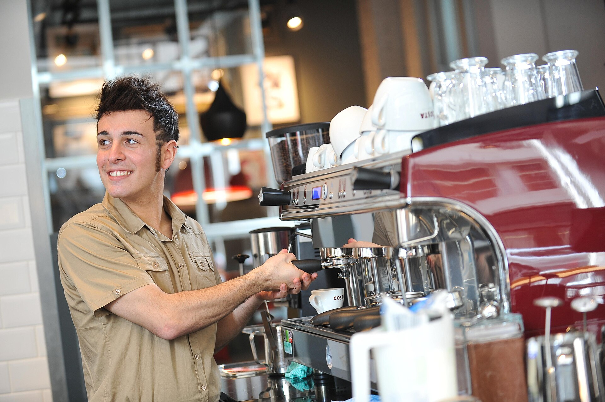
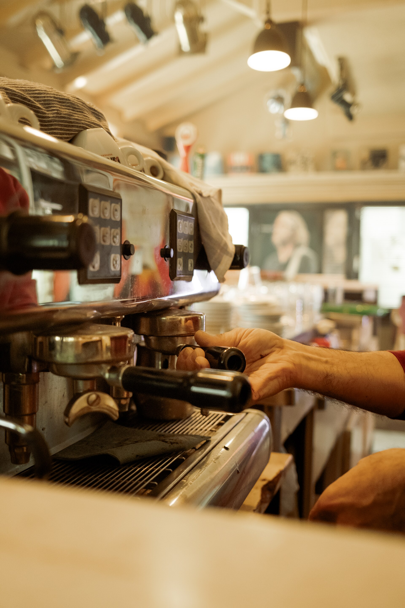
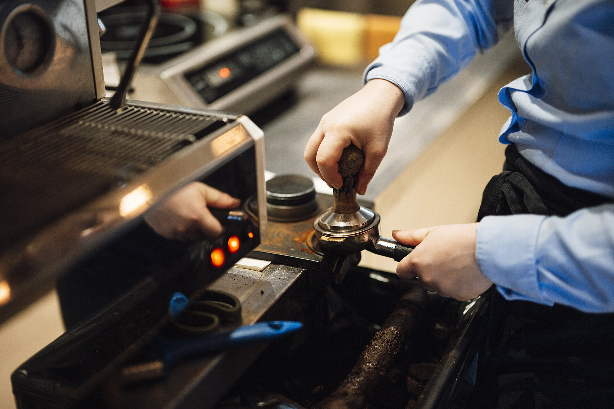
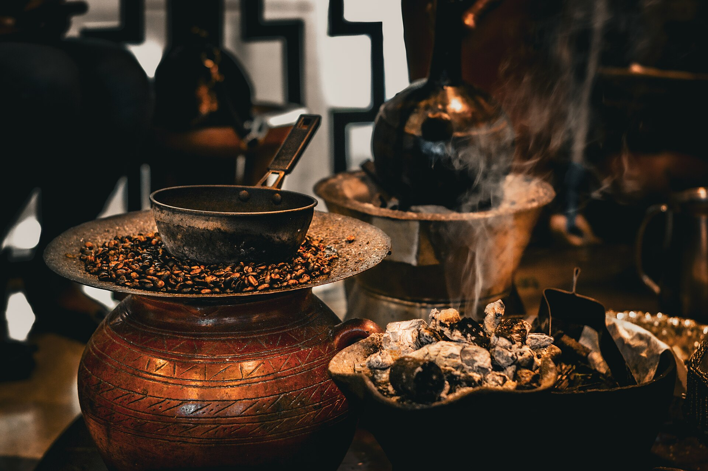
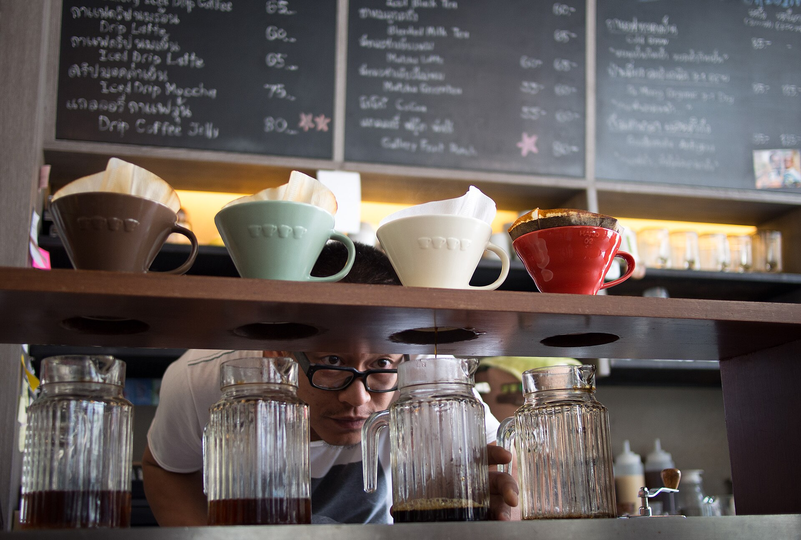
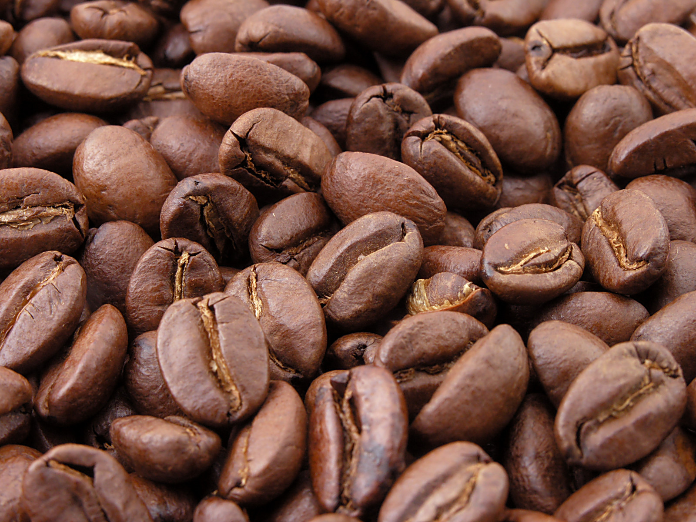
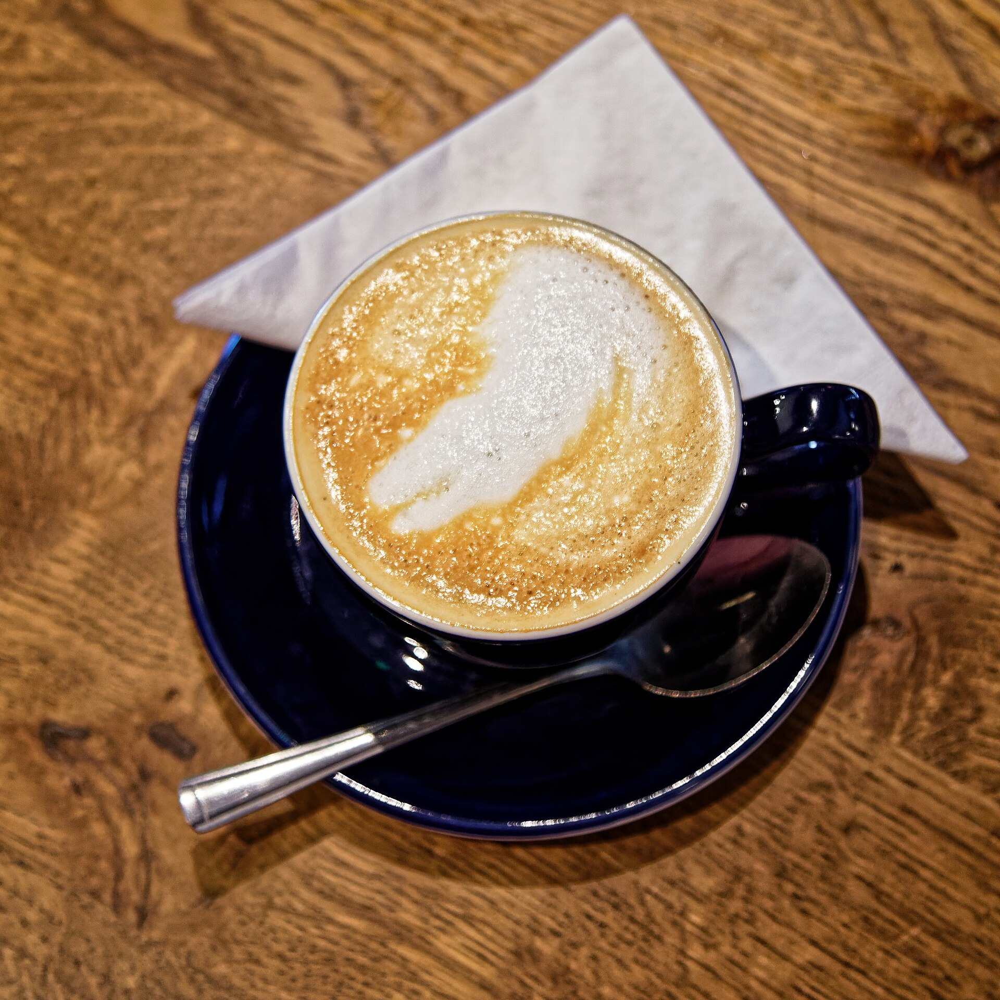
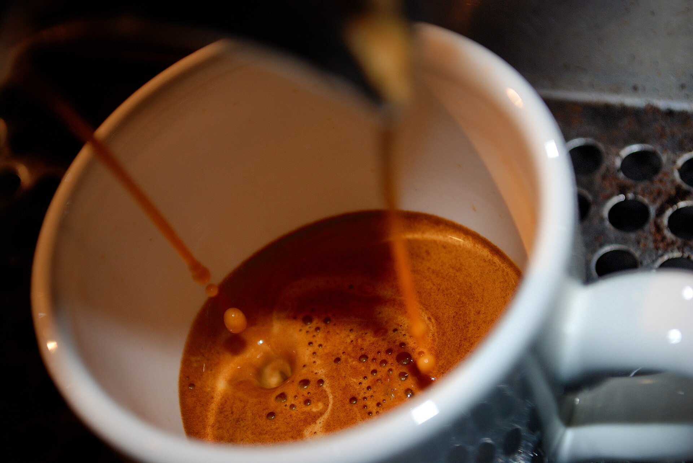

Марго Т.
Старший баристаДержит стандарты эспрессо и лучшие качественные рекомендации по альтернативе.
О нас · с 2022 года
MORROW открыли двое друзей в 2022-м: один умел жарить зерно, второй — разбираться в бетоне и свете. Получилось тихое, светлое место с запахом свежей партии.
История
Помещение на углу досталось со старым паркетом и хорошими окнами. Три месяца ушло на интерьер: мы сохранили панели, добавили светлую штукатурку и один длинный общий стол.
Первый ростер привезли в разобранном виде и собирали прямо в зале — гости, заглянувшие в первый месяц, помнят запах нового масла и таз с пробной жаркой.
Обжарку мы сделали центральной частью кофейни: не «вкус добавки», а основное ремесло. Каждую неделю выходит партия 12–15 кг, а у кассы висит доска с датой последней.

Принципы
Мало позиций, но все — на пике. Зерно не старше трёх недель от обжарки, выпечка — из печи сегодняшнего дня.
Музыка утром почти без куплетов, свет тёплый, бариста не ставит «быстрее». Кофе — это перерыв, а не этап гонки.
Дата обжарки у кассы, происхождение лотов на доске, состав выпечки — по первому вопросу. Скрывать нечего, скучно.
«Мы назвали кофейню MORROW — завтрашний день. Кофе во всём современном мире пьют быстро. А мы хотим, чтобы один раз в день вы пили его медленно.»
Команда · 7 человек, 4 роли

Держит стандарты эспрессо и лучшие качественные рекомендации по альтернативе.

Отвечает за первый кас в 8 утра и за то, чтобы капучино был одинаковым в будни и субботу.

Собирает профили, ведёт партию к первой трещине и отвечает на все «почему на этом зерне так».

Начинает в 5:40. Хруст круассана, который слышно через весь зал, — это её слои.
Имена и роли вымышлены — демонстрационный портфолио-проект.
Галерея




Частые вопросы
Да, мы жарим сами — малыми партиями по 12–15 кг, каждую неделю. Даты обжарки висят на доске у кассы, зерно в пачках можно потереть и посмотреть дату напрямую.
Можно. У длинного общего стола есть розетки каждые 60 см. В обеды (12:00–14:00) мы просим освобождать окна — на них обычно очередь тех, кто просто хочет посидеть и подождать.
Можно. Со спокойной собакой на поводке — всегда, у нас есть вода на баре. На террасе — без ограничений.
Держим овсяное и безлактозное молоко — без доплаты, во всех объёмах. Кофе без молока на выбор — сингл-ориджин дня.
Есть, открытая сеть MORROW_GUEST, скорость стабильная. Пароль спрашивать не нужно — только согласиться на баннер у бара.
Позвоните, забронируйте столик или просто приходите. Наша вечная рекомендация — фильтр дня и круассан.